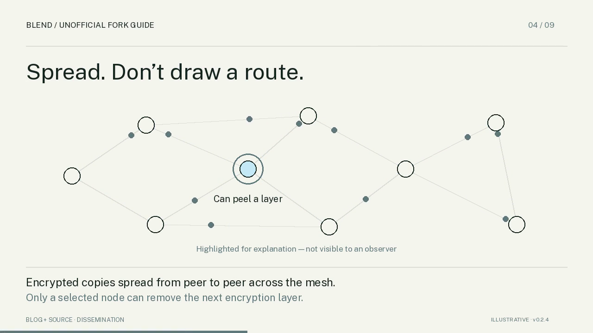
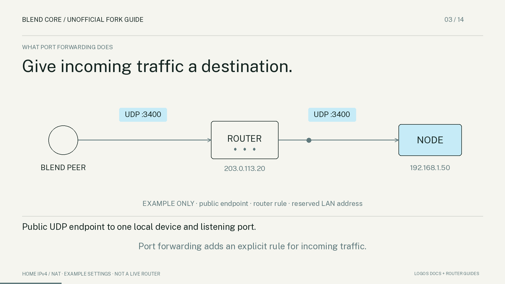

Understand Blend.
Make your node reachable.
Two narrated guides for node operators. Choose where to start.
01Blend
Privacy, layered encryption, network roles and what Core participation means.

02Reachability
Follow the Yes/No decision map, then learn about NAT, port forwarding and external connection checks.
